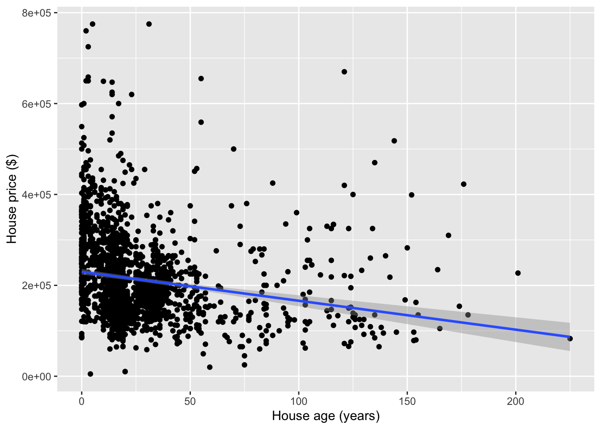
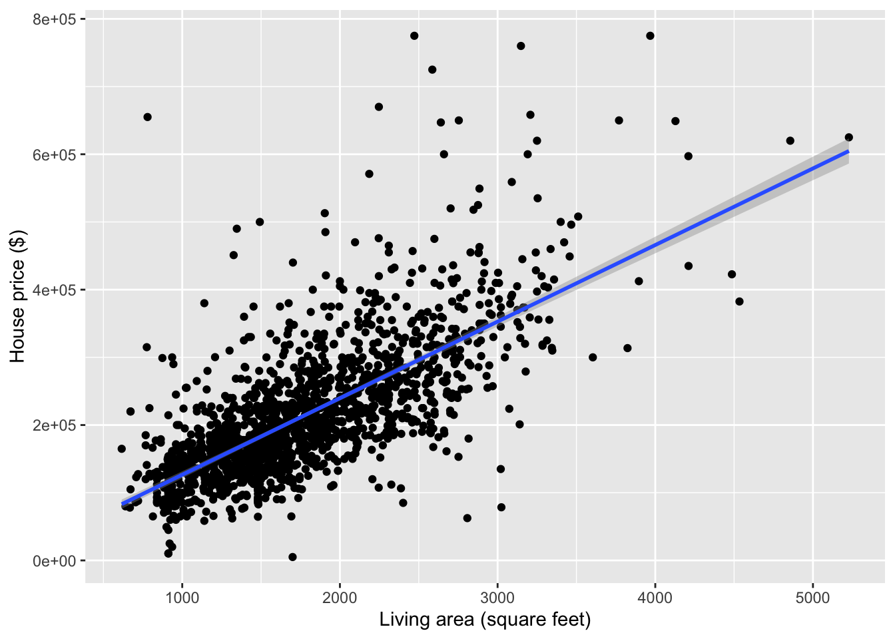

Topic 6 Modeling Concepts (Part 2)
Learning Goals
- Practice simple linear regression modeling concepts: model formula, coefficient interpretations, predicted values, residuals
- Develop two ideas of model quality: \(R^2\) and residual standard error
- Understand how categorical predictors are incorporated in linear regression models
Warm-up

mod1 <- lm(Price ~ Age, data = homes)
summary(mod1)##
## Call:
## lm(formula = Price ~ Age, data = homes)
##
## Residuals:
## Min 1Q Median 3Q Max
## -222183 -66299 -22232 43147 564995
##
## Coefficients:
## Estimate Std. Error t value Pr(>|t|)
## (Intercept) 229728.46 3218.18 71.385 < 2e-16 ***
## Age -636.26 79.66 -7.987 2.5e-15 ***
## ---
## Signif. codes: 0 '***' 0.001 '**' 0.01 '*' 0.05 '.' 0.1 ' ' 1
##
## Residual standard error: 96700 on 1726 degrees of freedom
## Multiple R-squared: 0.03564, Adjusted R-squared: 0.03508
## F-statistic: 63.79 on 1 and 1726 DF, p-value: 2.502e-15- Write the regression model formula using numbers from this output.
- Interpret all coefficients in this model.
- For a 50 year old house whose price is $100,000, what is the residual?
Discussion
What can we quantify about residuals to measure model quality?

- Not the sum or the mean of residuals (will always be zero)
- Residual standard error: essentially equal to the standard deviation of the residuals
- Scale of residual standard error changes with the scale of the data (e.g., house prices versus strength-to-weight ratio)
- Can we put the variance of the residuals on a nicer scale? Say from 0 to 1? Yes, we can.
- Some facts:
\[ \hbox{Var}(\hbox{response}) = \hbox{Var}(\hbox{residuals}) + \hbox{Var}(\hbox{predicted values}) \] \[ \hbox{Total variation} = \hbox{Unexplained variation} + \hbox{Explained variation} \]
- \(R^2\): What fraction of total variation in the response is explained by the model?
- Hopefully a lot. Which would mean that there is relatively little unexplained variation.
- Ranges from 0 to 1
\[ \begin{align*} R^2 &= \frac{\hbox{Var}(\hbox{predicted values})}{\hbox{Var}(\hbox{response})} \\ &= 1 - \frac{\hbox{Var}(\hbox{residuals})}{\hbox{Var}(\hbox{response})} \end{align*} \]
mod1 <- lm(Price ~ Living.Area, data = homes)
summary(mod1)##
## Call:
## lm(formula = Price ~ Living.Area, data = homes)
##
## Residuals:
## Min 1Q Median 3Q Max
## -277022 -39371 -7726 28350 553325
##
## Coefficients:
## Estimate Std. Error t value Pr(>|t|)
## (Intercept) 13439.394 4992.353 2.692 0.00717 **
## Living.Area 113.123 2.682 42.173 < 2e-16 ***
## ---
## Signif. codes: 0 '***' 0.001 '**' 0.01 '*' 0.05 '.' 0.1 ' ' 1
##
## Residual standard error: 69100 on 1726 degrees of freedom
## Multiple R-squared: 0.5075, Adjusted R-squared: 0.5072
## F-statistic: 1779 on 1 and 1726 DF, p-value: < 2.2e-16- Residual standard error: $69100
- This describes the amount of spread in the residuals.
- What qualifies as “high”? Imagine that your residual changed by that much. Is that a lot?
- \(R^2\) (
Multiple R-squared): 0.5075- 50.75% of the variation in house prices is explained by a simple linear regression model with square footage as a predictor
- What qualifies as “high”? Context helps determine if the response variable simply varies a lot. (e.g., stocks)
How do we incorporate categorical predictors?
In our housing dataset, there is a Heat.Type that indicates whether the heating type of the house is of type 2, 3, or 4.
Including a categorical predictor variable creates \(L-1\) indicator variables where \(L\) is the number of levels of the categorical variable.
- Type 2 is chosen as the reference category by default in R because it is first in alphanumeric order.
Heat.Type3andHeat.Type4get created as indicator variables by taking the original variable name (Heat.Type) and pasting the name of the category (3or4afterward)Heat.Type3equals 1 is this case is of heating type 3. Equals 0 otherwise.Heat.Type4equals 1 is this case is of heating type 4. Equals 0 otherwise.
Case Heat.Type Heat.Type3 Heat.Type4
---- --------- ---------- ----------
1 3 1 0
2 4 0 1
3 4 0 1
4 2 0 0mod2 <- lm(Price ~ Heat.Type, data = homes)
summary(mod2)##
## Call:
## lm(formula = Price ~ Heat.Type, data = homes)
##
## Residuals:
## Min 1Q Median 3Q Max
## -221355 -63355 -17644 43895 548645
##
## Coefficients:
## Estimate Std. Error t value Pr(>|t|)
## (Intercept) 226355 2853 79.348 < 2e-16 ***
## Heat.Type3 -17223 6192 -2.781 0.00547 **
## Heat.Type4 -64467 6168 -10.451 < 2e-16 ***
## ---
## Signif. codes: 0 '***' 0.001 '**' 0.01 '*' 0.05 '.' 0.1 ' ' 1
##
## Residual standard error: 95510 on 1725 degrees of freedom
## Multiple R-squared: 0.05972, Adjusted R-squared: 0.05863
## F-statistic: 54.78 on 2 and 1725 DF, p-value: < 2.2e-16From this output, I can see that the regression model formula is:
\[ \begin{align*} E[\hbox{Price}] &= \beta_0 + \beta_1\,\hbox{Heat.Type3} + \beta_2\,\hbox{Heat.Type4} \\ &= 226355 - 17223\,\hbox{Heat.Type3} - 64467\,\hbox{Heat.Type4} \end{align*} \]
- When a house is of heating type 2, what are the values of the indicator variables? Thus what is the expected (average) price for a house of heating type 2?
- Same questions for types 3 and 4
- This leads us to the interpretation of the coefficients in this model.
Exercises
We won’t be working in R today. Instead, look at the output from R code below, and answer the following questions.
Exercise 1
Let’s look at a model that describes Price in terms of Fuel.Type, which can be of types 2, 3, or 4.
mod3 <- lm(Price ~ Fuel.Type, data = homes)
summary(mod3)##
## Call:
## lm(formula = Price ~ Fuel.Type, data = homes)
##
## Residuals:
## Min 1Q Median 3Q Max
## -223535 -60535 -19652 42811 546465
##
## Coefficients:
## Estimate Std. Error t value Pr(>|t|)
## (Intercept) 228535 2748 83.160 < 2e-16 ***
## Fuel.Type3 -63598 6021 -10.563 < 2e-16 ***
## Fuel.Type4 -39801 7029 -5.663 1.74e-08 ***
## ---
## Signif. codes: 0 '***' 0.001 '**' 0.01 '*' 0.05 '.' 0.1 ' ' 1
##
## Residual standard error: 95080 on 1725 degrees of freedom
## Multiple R-squared: 0.06823, Adjusted R-squared: 0.06715
## F-statistic: 63.16 on 2 and 1725 DF, p-value: < 2.2e-16Interpret all coefficients in this model.
Interpret the \(R^2\) and residual standard error to evaluate the quality of the model.
What is the residual for a $250,000 house that is of fuel type 2? What about a $250,000 house that is of fuel type 3?
Exercise 2
Let’s look at a model that describes Price in terms of Sewer.Type, which can be of types 1, 2, or 3.
mod4 <- lm(Price ~ Sewer.Type, data = homes)
summary(mod4)##
## Call:
## lm(formula = Price ~ Sewer.Type, data = homes)
##
## Residuals:
## Min 1Q Median 3Q Max
## -211426 -66426 -21426 45574 574716
##
## Coefficients:
## Estimate Std. Error t value Pr(>|t|)
## (Intercept) 250952 28340 8.855 <2e-16 ***
## Sewer.Type2 -50668 28676 -1.767 0.0774 .
## Sewer.Type3 -34527 28479 -1.212 0.2255
## ---
## Signif. codes: 0 '***' 0.001 '**' 0.01 '*' 0.05 '.' 0.1 ' ' 1
##
## Residual standard error: 98170 on 1725 degrees of freedom
## Multiple R-squared: 0.006633, Adjusted R-squared: 0.005481
## F-statistic: 5.759 on 2 and 1725 DF, p-value: 0.003215Interpret all coefficients in this model.
Interpret the \(R^2\) and residual standard error to evaluate the quality of the model.
What is the residual for a $200,000 house that is of sewer type 3? What about a $200,000 house that is of sewer type 1?